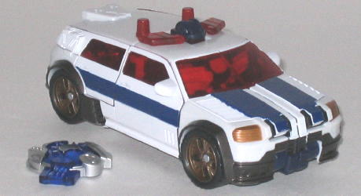
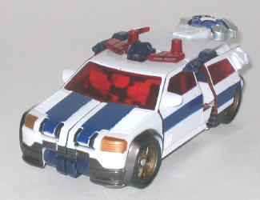
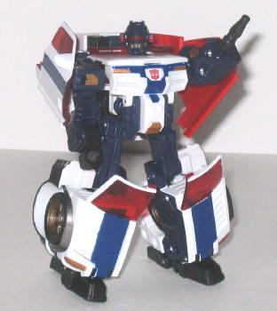
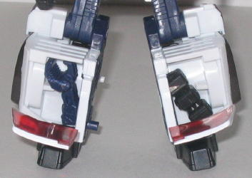

Allegiance
: Autobot
Size
: Deluxe
Homeworld
: Earth
Cyber Key Code
: d26w
Difficulty of Transformation
: Medium
Color Scheme
: White, very dark navy
blue, transparent red, and some glossy dark blue, metallic bronze, metallic
gunmetal gray, and black
Rating
: 7.7


Red Alert's vehicle
mode, as it's always been, is a semi-realistic emergency SUV. I say "semi-realistic"
because Red Alert has those same gaudy transparent red windows that his
Armada version
did. I don't know why Hasbro
has had done that so often lately with their TFs, it doesn't look good
compared to a more realistic color like blue or clear. (The transparent
windows also show some of the robot parts inside, although otherwise this
mode is pretty robot kibble-free.) Actually, out of all the characters
in Cybertron carried over from Energon or Armada, Red Alert by far looks
the most similar to his previous version. The colors (which go together
rather well overall) are almost identical, as is the design of the alt
mode. His Cybertron version is a bit more squat and streamlined than his
Armada self, but they're defintiely similar enough to be easily recognized
as the same character. One thing that I don't like about his Cybertron
self, though, is that the top of the robot head is clearly visible in this
mode-- I mean it's just right THERE, in between the sirens. That gets a
big "eeehhh" from me. The paint detailing is very good for the figure,
however, though the mold detailing is a bit lackluster in places, such
as the top of this mode. Red Alert's Cyber Key gimmick is rather cool for
a deluxe-- insert the Key into the rear of this mode and the rear doors
pop out a bit, allowing two small (non-firing) guns to flip out to give
ol' Red some much-needed firepower! Pretty cool!


Red Alert's robot mode
suffers from some proportions and extras problems, though in other aspects
it's pretty cool. For proportions, Red Alert's lower legs are waaay too
chunky when compared to the small upper legs, to the point where it almost
looks goofy. I'm also not too fond of the "four feet" underneath the large
legs, which are there due to how his transformation works while still keeping
him stable. Still, it looks odd. And speaking of the legs, they're actually
each made of two halves that connect together via a tab-- however, the
tab does not hold together the leg halves well at all, because there's
another tab that gets in the way, frustratingly enough. You can just shave
down this extra tab, but you obviously shouldn't have to. The vehicle windows
on the sides of his arms and his upper back also don't really complement
the look of the mode, either, and get in the way of articulation some.
As for Red Alert's overall articulation, it's fair, but not great-- he
can move a the head, shoulders, elbows, hips (at two places), and knees.
However, many of these joints, such as the knees and elbows, have somewhat
limited articulation and can only bend in one direction. As for the positives,
though, this mode has those too-- for one, I really like the detailing
on Red Alert's head and chest. His head is very similar to his Armada version,
but his "ears" look like little sirens, which is a nice touch. The chest
also looks like a squat version of the front part of an emergency SUV,
another cool touch to tie in the robot and vehicle modes more. Probably
the coolest part of this mode, though, involves Red Alert's changable parts
to use for his left arm. Normally, the arm looks like a miniature gun/welder--
again, similar to his Armada version. However, if you open up the panels
on the front of his lower legs, you can put two other attachments on the
end of that gun to make it either a hammer-hand or a claw-hand! Really
cool, and it serves to give Red Alert further personality as a mechanic/medic.
Red Alert has some really
cool, unique gimmicks, like the flip-out cannons and the interchangable
hand parts, but he also suffers from some definite proportion and kibble
problems. He's about middle-of-the-road as deluxes go, overall.
Review by Beastbot